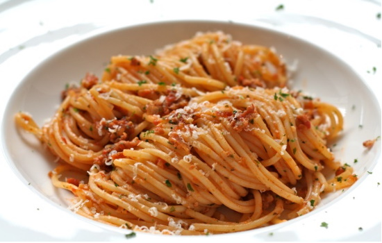

Recepten
Het lekkerst is het als je de bolognesesaus een aantal uur van tevoren maakt.Zelf zette ik de saus ongeveer vijf uur op het vuur. Gebruik hiervoor een ruime hapjespan met deksel.
Heb je deze niet dan kan je bijvoorbeeld ook een braadpan gebruiken.
Verwarm de pan voor op laag vuur zodat deze goed warm kan worden.